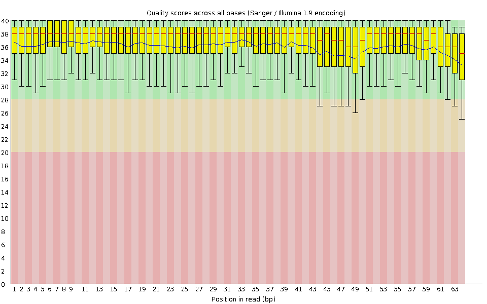
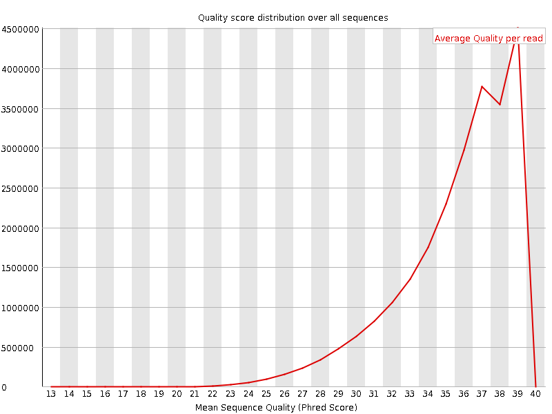
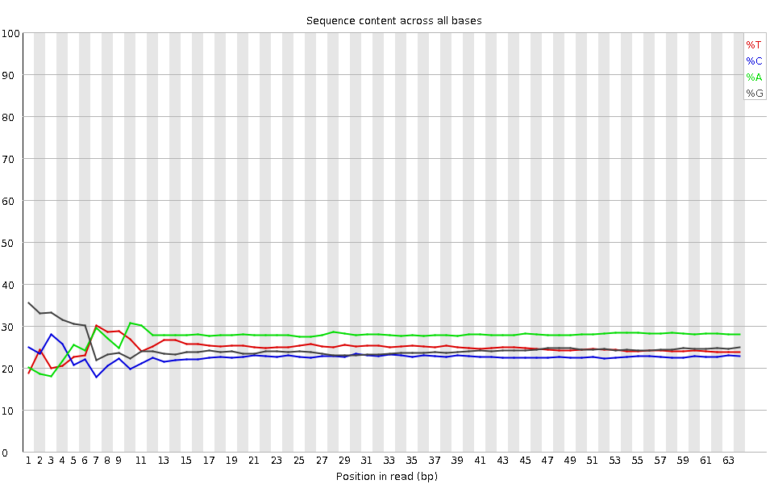
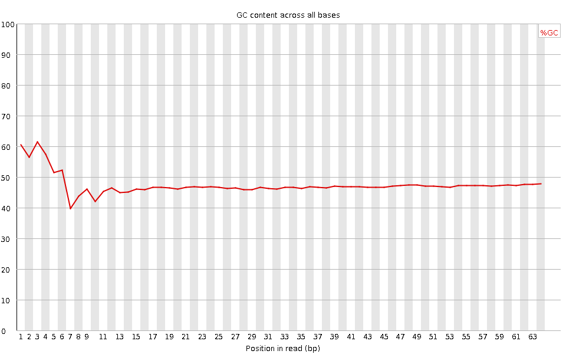
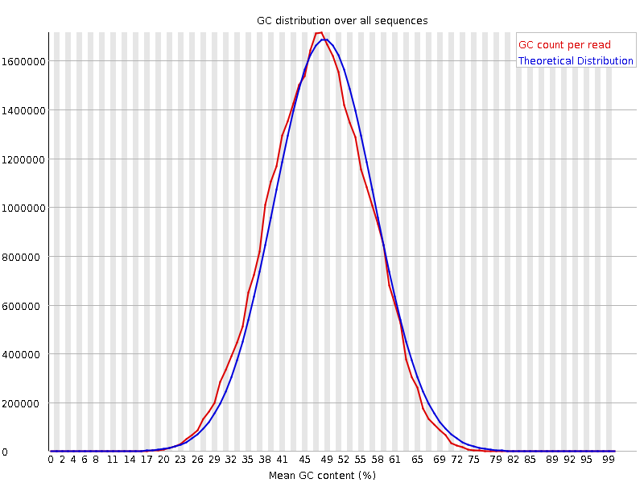
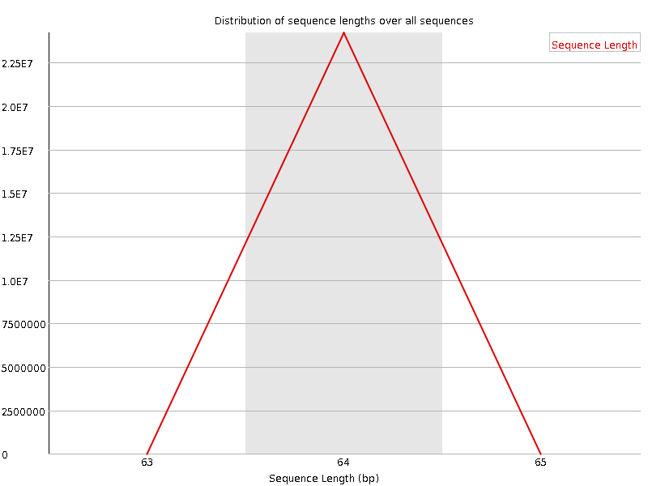
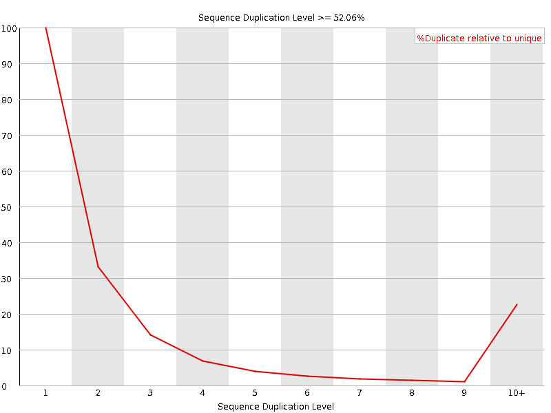
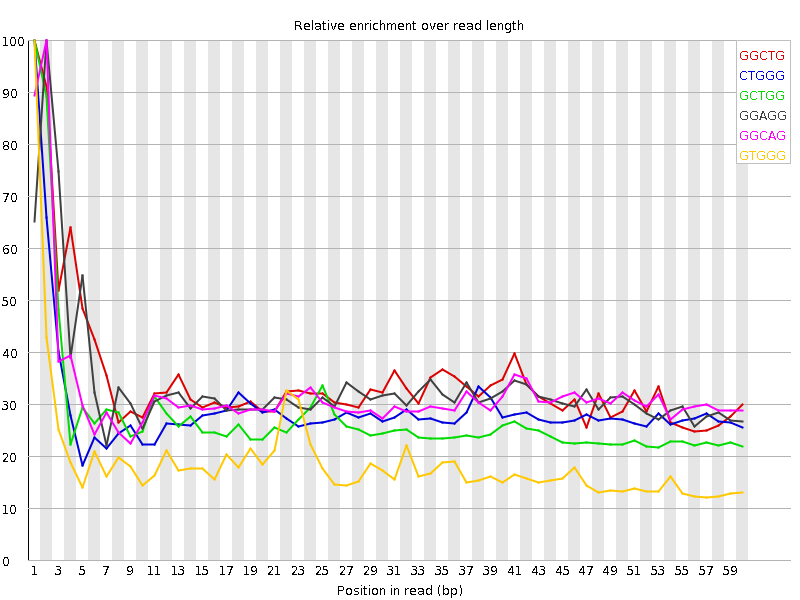

![[OK]](Icons/tick.png) Basic Statistics
Basic Statistics
| Measure | Value |
|---|---|
| Filename | SRR307922_pe_1.f.fastq |
| File type | Conventional base calls |
| Encoding | Sanger / Illumina 1.9 |
| Total Sequences | 24203201 |
| Filtered Sequences | 0 |
| Sequence length | 64 |
| %GC | 47 |
Per base sequence quality

Per sequence quality scores

![[WARN]](Icons/warning.png) Per base sequence content
Per base sequence content

![[FAIL]](Icons/error.png) Per base GC content
Per base GC content

Per sequence GC content

Per base N content

Sequence Length Distribution

Sequence Duplication Levels

Overrepresented sequences
| Sequence | Count | Percentage | Possible Source |
|---|---|---|---|
| GCTGGATAGTAGGTAGGGACAGTGGGAATCTCGTTCATCCATTCATGCGCGTCACTAATTAGAT | 24393 | 0.10078418966152451 | No Hit |
Kmer Content

| Sequence | Count | Obs/Exp Overall | Obs/Exp Max | Max Obs/Exp Position |
|---|---|---|---|---|
| GGCTG | 2480760 | 1.971441 | 5.7048583 | 1 |
| CTGGG | 2331250 | 1.8526266 | 6.3468904 | 1 |
| GCTGG | 2245665 | 1.7846128 | 6.4639482 | 1 |
| GGAGG | 2624845 | 1.726829 | 5.1519785 | 2 |
| GGCAG | 2368905 | 1.7024977 | 5.275439 | 2 |
| GTGGG | 2240335 | 1.6297418 | 8.593929 | 1 |
| GGGAG | 2394100 | 1.5750268 | 5.7551203 | 2 |
| GGGTG | 2023895 | 1.4722916 | 5.76886 | 2 |
| TGGGT | 2021375 | 1.4661207 | 5.0666437 | 2 |
| GGGCA | 2038150 | 1.4647888 | 5.216579 | 1 |
| TGGGG | 1822245 | 1.3256004 | 6.036636 | 1 |
| GGGGA | 1956625 | 1.2872216 | 6.693585 | 1 |
| GGGCT | 1591760 | 1.2649595 | 5.039939 | 3 |
| GGGGG | 1584390 | 1.1559815 | 7.626507 | 1 |
| GGGGT | 1554345 | 1.1307153 | 6.1394253 | 3 |
| CGGGG | 740435 | 0.59015894 | 5.311897 | 1 |